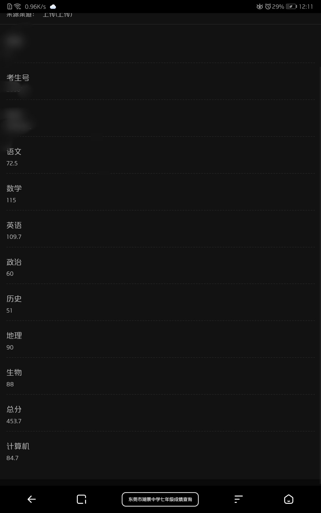

困困鱼崽仔小云
@kunkunyuzaizai
@wenjiuchen80589 这我以前初一下册的成绩语文真的废大量时间才学会数学在后面也退步了说下最好的成绩应该是初二上学期语文最高是80多英语最高110多数学最高119.9生物地理80多政治历史应该都是50 60分物理八十多后面成绩就越来越差因为长期的被80我原本2023年6月就要毕业了但因80坚持不下去休学了现在都没毕业也不敢上学

玖辰🏳️⚧️🍥
@wenjiuchen80589
除去今天，距离中考只剩下三天了……
呜呜呜怎么办，数学是彻底凉了，就算我语文英语都考110也补不了数学那这么大的分差啊呜呜呜，下辈子再不偏科了……
有点想离家出走，去接线下单子的冲动……虽然这个想法半个月前就有了呜呜呜